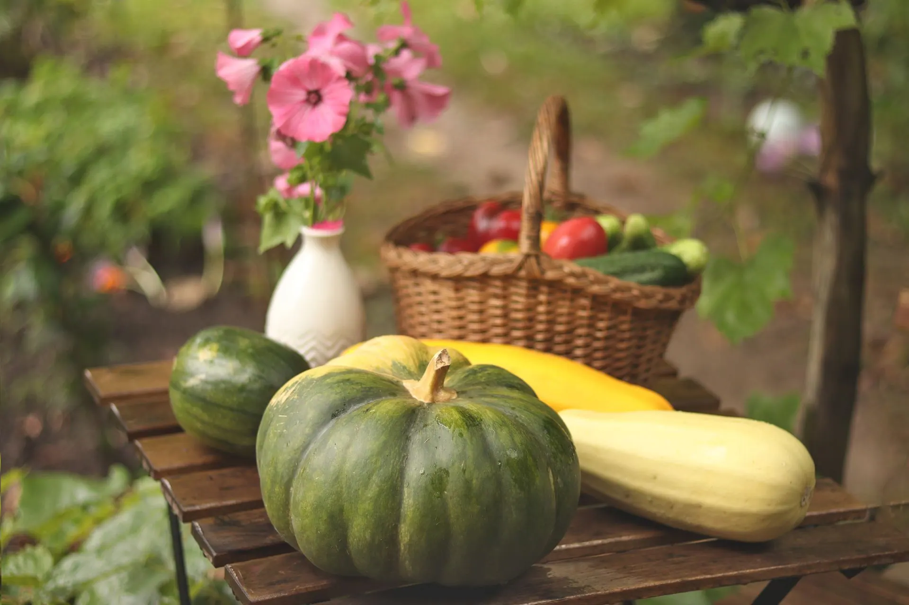

November 26
Fourth Thursday in November
Thanksgiving week lesson: practice gratitude and read the one 1621 account in 25 minutes
A free, no prep Thanksgiving week lesson for grades 3 to 8: a gratitude practice and what the 1621 record says, with the Wampanoag perspective. No myths.
What it is
Thanksgiving Day is the fourth Thursday in November. In the story many people learn, Pilgrims and nameless Indians share a friendly meal. The Smithsonian's National Museum of the American Indian (NMAI) calls that story a myth that was sparked in the mid-1800s, when English accounts of a 1621 harvest event resurfaced. A magazine editor, Sarah Josepha Hale, campaigned for a national holiday, and in 1863 President Abraham Lincoln declared a national Thanksgiving in November.
What the record shows: one English eyewitness account of the 1621 harvest survives, written by Edward Winslow and printed in 1622. Winslow wrote that the English sent four men fowling, and that "their greatest king Massasoit, with some 90 men" was entertained and feasted for three days, and that the visitors killed five deer and brought them to the plantation. Plimoth Patuxet Museums notes that Winslow is the only person known to have written about what happened, that there are no contemporary Wampanoag records of the event, and that the label "First Thanksgiving" was added in 1841 by Alexander Young, who annotated the passage because it resembled the Thanksgiving feasts of his own time.
The Wampanoag perspective: the NMAI explains that the Wampanoag and neighboring nations had been dealing with European explorers, traders and enslavers for nearly one hundred years before English settlers arrived at the Wampanoag village of Patuxet in 1620. After careful observation, negotiations and exchanges, the Wampanoag decided to assist the English, but those dealings had much more to do with political alliances and diplomacy than with a budding friendship, and cooperation and peace were short-lived. Harvest ceremonies and festivals have been part of Wampanoag life for thousands of years, and Cranberry Day is significant for the Aquinnah Wampanoag.
Giving thanks belongs to many peoples. The NMAI describes it as a longstanding, central tradition among Indigenous peoples that is still practiced today, and points to the Haudenosaunee Thanksgiving Address, which the Haudenosaunee recite at community gatherings throughout the year. The NMAI also discourages costumes and crafts that copy Native traditions, so this lesson uses none.
How to run it
25 minutes, 5 steps. The time on the left is when each step starts.
-
0:00
Warm-up
4 minOn the boardWrite two things you have heard about the "first Thanksgiving." Where did you hear each one?
You do- Students write silently for two minutes.
- Take four items aloud and list them on the board without comment.
- Do not correct anything. These items will be checked against a real source.
Say: Keep your list. By the end of class you will have tested it against what is actually on paper.
-
4:00
Read the one eyewitness account
6 minOn the boardEdward Winslow, 1621 (printed in 1622; the spelling is modernized on the Plimoth Patuxet page): "...many of the Indians coming amongst us, and among the rest their greatest king Massasoit, with some 90 men, whom for three days we entertained and feasted, and they went out and killed five deer, which they brought to the plantation and bestowed on our governor..." Who wrote this? Who is "we"? Who are "they"? What does it say? What does it leave out?
You do- Read the passage aloud twice. The second time, students underline with a finger the words that name people.
- Take answers to the five questions. Who wrote it: Edward Winslow, an Englishman who was there. Who is "we": the English. Who are "they": the Wampanoag guests. What it leaves out: any Wampanoag voice, and the word Thanksgiving.
- Point to the warm-up list. Ask which items are in this passage and which are not.
Say: Notice what the writer chose to tell us, and what he left out.
-
10:00
What we know and who said it
6 minOn the board- Thanksgiving Day is the fourth Thursday in November.
- 1621: the one English eyewitness, Edward Winslow, wrote that Massasoit came with some 90 men and was feasted for three days.
- No Wampanoag record of that event survives from the time. The English letter is the only account.
- The Wampanoag held harvest ceremonies and gave thanks for thousands of years before the English arrived.
- The words "first Thanksgiving" were added to the 1621 account in 1841. In 1863 President Lincoln declared a national Thanksgiving.
You do- Read the five facts aloud, one slide at a time.
- After each fact, ask whether it supports or challenges something on the warm-up list. Mark items with a check or a question mark.
- After the third fact, ask: why does it matter that only one side wrote anything down?
Say: One account is a starting point. A fuller story needs more voices than the one that survived.
-
16:00
Gratitude, specific and sincere
6 minOn the boardGiving thanks is a practice, not only a holiday. Write one thank-you: To ___, for ___, because ___. Make it specific. "Thank you for everything" does not count.
You do- Tell students that giving thanks is a longstanding tradition among Indigenous peoples that continues today. For example, the Haudenosaunee recite a Thanksgiving Address at community gatherings throughout the year.
- Students write one thank-you to a person, a place or something in the natural world. Pairs read theirs to each other.
- Invite students to deliver their thank-you this week.
Say: A specific thank-you tells someone exactly what mattered to you.
-
22:00
Exit ticket
3 minOn the boardRewrite one item from the warm-up list so it is accurate, or write one question the 1621 account cannot answer.
You do- Students answer on a scrap of paper and hand it to you at the door.
Discussion questions
Open an answer when you want it.
What does Winslow's account tell us, and what does it leave out?
It tells us the English held a harvest celebration, that Massasoit came with some 90 men, that they were entertained and feasted for three days, and that five deer were brought. It does not use the word Thanksgiving, and it gives no Wampanoag view of why they came or what they thought.
Why does it matter that only one English account survives and no Wampanoag record from the time?
One source gives one point of view. Historians have to be careful about what they claim, and the NMAI says the Wampanoag voice has been largely absent from the national story. Plimoth Patuxet adds that Wampanoag histories are passed down orally, as stories or through images such as wampum belts.
How did the 1621 harvest come to be called the first Thanksgiving?
Plimoth Patuxet says the label came later: Alexander Young annotated the passage as the first Thanksgiving in 1841. The NMAI adds that the story grew in the mid-1800s, and that President Lincoln declared a national Thanksgiving in 1863.
Is giving thanks only an English or American tradition? How do you know?
No. The NMAI says the Wampanoag held harvest ceremonies for thousands of years before 1621, and that giving thanks is a longstanding, central tradition among Indigenous peoples that is still practiced today. The Haudenosaunee Thanksgiving Address is recited at community gatherings throughout the year.
Exit ticket
Rewrite one item from your warm-up list so it is accurate, or write one question the 1621 account cannot answer.
Examples of accurate rewrites: "One Englishman wrote the only account that survives" or "The Wampanoag gave thanks at harvest long before 1621." Examples of questions: "Why did the Wampanoag come, and what did they think?" or "What did the Wampanoag eat and say at the gathering?"
Make it fit your class
Younger students
For kindergarten to grade 2, skip the 1621 passage and teach gratitude plus one accurate idea: the Wampanoag gave thanks for the harvest long before 1621, and harvest traditions are still important in Wampanoag communities today. Read aloud a picture book from the NMAI's list, such as Keepunumuk by Danielle Greendeer, Anthony Perry and Alexis Bunten, which the NMAI recommends for grades K to 2. Students draw one thing they are thankful for and tell you a sentence to write.
Older students
For grades 9 to 12, put Winslow's passage beside the NMAI's account of nearly one hundred years of contact with Europeans, alliances and diplomacy, and short-lived cooperation. Ask how the "friendly meal" story changes when that context is added. The NMAI recommends Colonization and the Wampanoag Story by Linda Coombs for grades 5 to 12.
Spanish class version
In Spanish, the holiday is el Día de Acción de Gracias. Use the vocabulary for a short gratitude writing task, and read the 1621 passage in English or in a translation you trust.
- el Día de Acción de GraciasThanksgiving Day
- agradecerto thank, to be grateful for
- dar las graciasto give thanks
- la gratitudgratitude
- la cosechathe harvest
- el testigo, la testigothe witness
- la fuente primariathe primary source
- segúnaccording to
Task: Students write three sentences in Spanish with the frame Agradezco a ___ por ___ porque ___. Challenge: write one sentence about the 1621 account that starts with Según Winslow.
Want it printed? These files from our TPT store go with this lesson: Thanksgiving Bulletin Board.
Where the facts come from
- Smithsonian National Museum of the American Indian, Rethinking Thanksgiving Celebrations: Native Perspectives on Thanksgiving. Used for the myth of the first Thanksgiving, Sarah Josepha Hale, Lincoln in 1863, the Wampanoag perspective, nearly one hundred years of contact, Patuxet in 1620, harvest traditions, Cranberry Day, the Haudenosaunee Thanksgiving Address, the recommended picture books, and discouraging costumes and crafts.
- Plimoth Patuxet Museums, Eye-Witness Account of the 1621 Harvest Celebration. Used for Edward Winslow's account, Massasoit with some 90 men, three days of feasting, five deer, Winslow as the only known writer, and Alexander Young's 1841 annotation.
- Plimoth Patuxet Museums, Unit 4: 1621 Harvest Celebration. Used for one English eyewitness account and no contemporary Wampanoag historical records of the event.
- USA.gov, Federal holidays. Used for Thanksgiving Day on the fourth Thursday in November.
- USA.gov, Día de Acción de Gracias. Used for the Spanish name of the holiday and its date rule.
Image credits
- Autumn Harvest with Gourds and Garden Vegetables by Jelena Kazak, Pexels License. Source.
Updated October 31, 2026